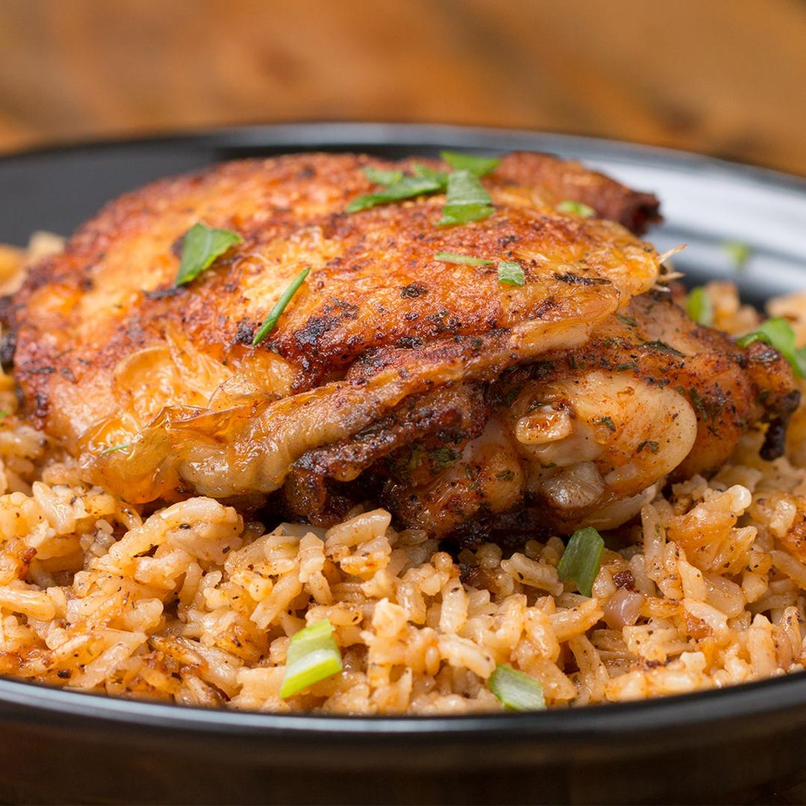

Chicken Thighs Over Rice

Description
Sometimes the best things come in one pot! This baked chicken and rice dish saves you the cleanup without skimping on flavor. After you quickly pan fry your seasoned chicken, remove it and cook garlic and onions in the leftover juices. Add rice and broth, cook everything, and top with the chicken before baking for another 35 minutes (optional: broil the chicken separately to get a crispier skin.) You’ll be left with a mountain of food so delicious, you’ll meal prep this super easy recipe at least once a week forever.
Ingredients
- 5 chicken thighs
- Teaspoon salt
- Teaspoon pepper
- Teaspoon paprika
- Teaspoon parsley
- Tablespoon olive oil
- Tablespoon garlic, minced
- 1/2 cup red onion, diced
- 1 cup long grain rice
- 1 1/2 cups chicken broth
Steps
- Preheat oven to 400˚F (200˚C).
- In a large bowl, evenly season chicken thighs with salt, pepper, paprika, and parsley.
- On high, heat olive oil in a oven-proof pot and place chicken thighs, skin-side down, in the hot oil. Cook 5-6 minutes or the thighs develop brown crispy skin and flip over.
- Cook an additional 5-6 minutes to brown the other side and remove from the pot.
- Add the garlic and onions to the pot, and cook until the onions are transparent.
- Pour in the rice and chicken broth to the pot and season with salt and pepper. Stir well, bringing to a boil.
- Add the chicken thighs back into the pot, skin-side up, on top of the rice, bring back to a boil and cover with a lid.
- Bake for 35-40 minutes, or until the rice is fully cooked.
- NOTE: For a crispy skin, remove chicken thighs and broil.
Comamos!!!